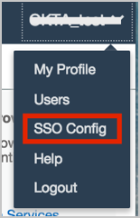
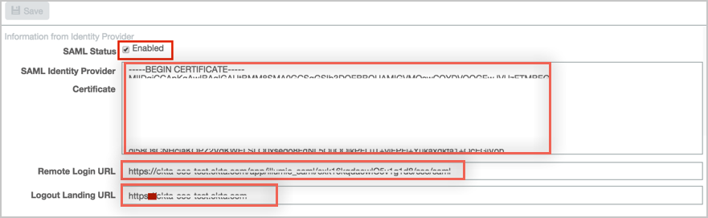
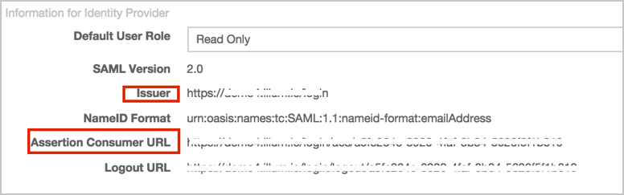
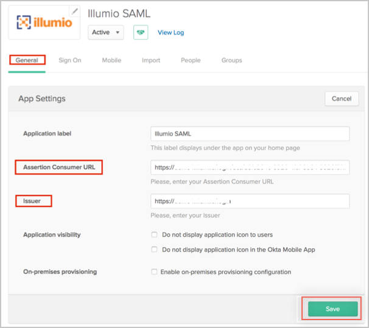

Login to Illumio as an administrator.
From your login, select SSO Config from the dropdown menu, as shown:

Click Edit and enter the following:
Check the Enabled box for SAML Status.
SAML Identity Provider Certificate: Copy and paste the following x.509 Certificate (in PEM Text format):
Sign into the Okta Admin Dashboard to generate this variable.
Remote Login URL: Copy and paste the following:
Sign into the Okta Admin Dashboard to generate this variable.
Logout Landing URL: Copy and paste the following:
Sign into the Okta Admin Dashboard to generate this variable.
Navigate to the Illumine SAML Setup page, and make note of the values of the following fields:
Issuer.
Assertion Consumer URL.

In Okta, select the General tab for the Illumino app, then click Edit and enter the following values you just noted from Illumine:
Assertion Consumer URL.
Issuer.
Click Save.

Notes:
IDP-initiated flows, SP-initiated flows, and Just In Time (JIT) Provisioning are all supported